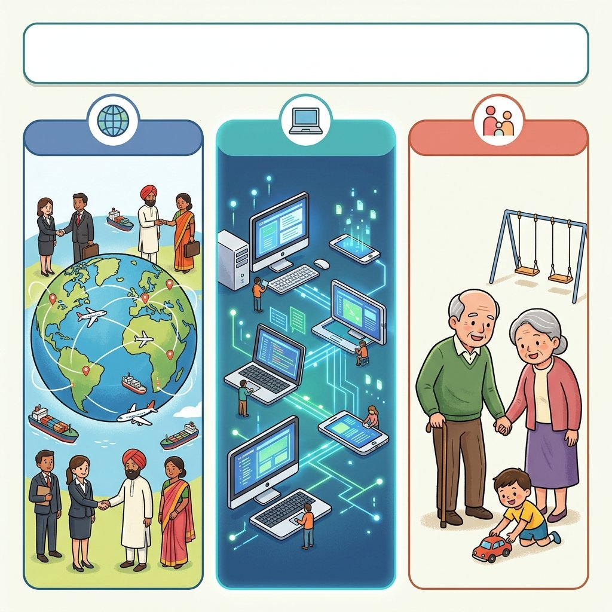
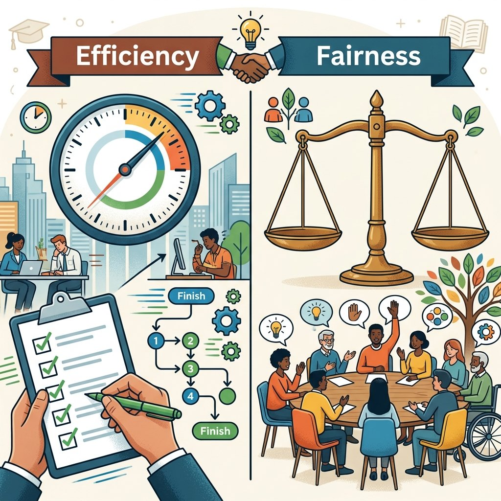

1. 現代社会の特色とルール
私たちは今、歴史の授業で学んできた過去の人々の歩みの結晶である「現代社会」の中に生きています。この現代社会には、かつてないスピードで起きているいくつかの急激な変化があります。今回は、現代社会を特徴づける３大変化と、私たちが日々生活する上でどうしても発生する「意見の対立」をどのようにルールで解決していくべきか、その基本を整理します！
1. 現代社会の３つの大きな変化
私たちの暮らしを取り巻く環境は、大きく分けて３つの変化が同時に、そして急激に進んでいます。定期テストでも非常によく出る必須キーワードです。
① グローバル化
国境を越えて、人、モノ、お金、情報が自由に活発に行き来し、世界の一体化が進むこと。これにより、他国と製品を作り分ける「国際分業」が進みましたが、異なる文化や習慣を認め合って生きる多文化共生（たぶんかきょうせい）の考え方が重要になっています。
② 情報化（じょうほうか）
インターネットやスマートフォン、AIなどの普及により、情報が大量かつ瞬時に手に入る社会（高度情報通信社会）のこと。便利になった一方、デマの拡散、ネットでの人権侵害、情報セキュリティが課題であり、一人ひとりの情報モラルの向上が求められます。
③ 少子高齢化（しょうしこうれいか）
生まれる子どもの数が減る（少子化）一方で、平均寿命が伸びて高齢者の割合が高まる（高齢化）現象。日本は、全人口に占める65歳以上の割合（高齢化率）が21%を超える超高齢社会（ちょうこうれいしゃかい）に入っており、深刻な労働力不足や社会保障費の負担増に直面しています。

図1：グローバル化、情報化、少子高齢化が急速に進む現代の社会構造のイメージ
2. 社会集団と「対立」から「合意」へ
私たちは、一人だけで生きることはできません。家族、学校、部活動、地域、そして国など、共通の目的を持って人々が集まる社会集団（しゃかいしゅうだん）をつくり、その中で役割を分担しながら生きています。
しかし、人によって考え方や利益は異なるため、社会集団の中ではどうしても意見や利害の対立（たいりつ）が発生します。対立を力づくで解決しようとすると喧嘩や戦争になってしまうため、お互いに話し合って双方が納得できる共通の解決策である合意（ごうい）をつくり出す必要があります。
この合意に基づいて作られるのが、私たち全員が守るべき共通の決め事、すなわち「ルール」です。
3. ルールを決定するための２大基準（効率と公正）
みんなで話し合って合意をつくったり、解決のルールを決めたりする際、全員が納得しやすくなるための「２つのものさし（判断基準）」があります。これが中学公民で超頻出の「効率」と「公正」です。
① 効率（こうりつ）
時間、お金、労力などを無駄にせず、「無駄を省いて解決できているか」という基準です。
- 話し合いが長引きすぎて何も決まらないときに「多数決」で素早く決める。
- みんなで手分けして作業を分担し、時間を短縮する。
② 公正（こうせい）
決めるまでの手続きや、決まったルールの内容が「みんなにとって公平・平等であるか」という基準です。特に弱い立場にある人が不利にならないかを重視します。これには２つの見方があります。
◆ 公正の２つのアプローチ
・手続きの公正：
話し合いに参加するチャンスが全員に平等に与えられているか。（例：一部のメンバーだけで勝手に決めず、全員にアンケートをとる）
・結果の公正：
決まったルールで、特定の人だけが不利益を被ったり、不平等になったりしていないか。（例：みんなで掃除をする際、怪我をしている人には負担の少ない作業を割り振る）

図2：話し合いやルールの決定において、無駄をなくす「効率」と、平等を重んじる「公正」のバランスが重要です
🔥 この単元のテスト対策・暗記のコツ
-
★
現代社会の3大変化の言葉の意味：
・記述問題で「グローバル化とは何か」と聞かれたら、「国境を越えて人、モノ、お金、情報が自由に行き来し、世界の一体化が進むこと」と簡潔に書けるように準備しましょう。 -
★
超高齢社会の定義数値：
・65歳以上の人口が全体の21%を超えると「超高齢社会」と呼ばれます。7%（高齢化社会）、14%（高齢社会）、21%（超高齢社会）の数字の階段は入試や定期テストで狙われます。 -
★
「効率」と「公正」の判別・記述（最頻出！）：
・記述：「合意を得るためのルール決定における『効率』と『公正』の考え方の違いを説明しなさい。」
・解答：「効率は時間やお金などの無駄をなくして解決することを目指し、公正は手続きや結果が全員にとって平等で不利益を被る人がいないようにすることを目指す。」